万安医院新闻
粽香浓情满端午 爱心播洒金康万安
人气: " " 时间：2018-06-18
端午近，粽香飘，为迎接传统端午佳节的到来，在端午来临前夕，金康万安两院工会组织院内员工及部分志愿者代表，为入住我院老人开展了包粽子庆端午活动。让老人们在端午佳节里感受到金康万安家人般的温暖。
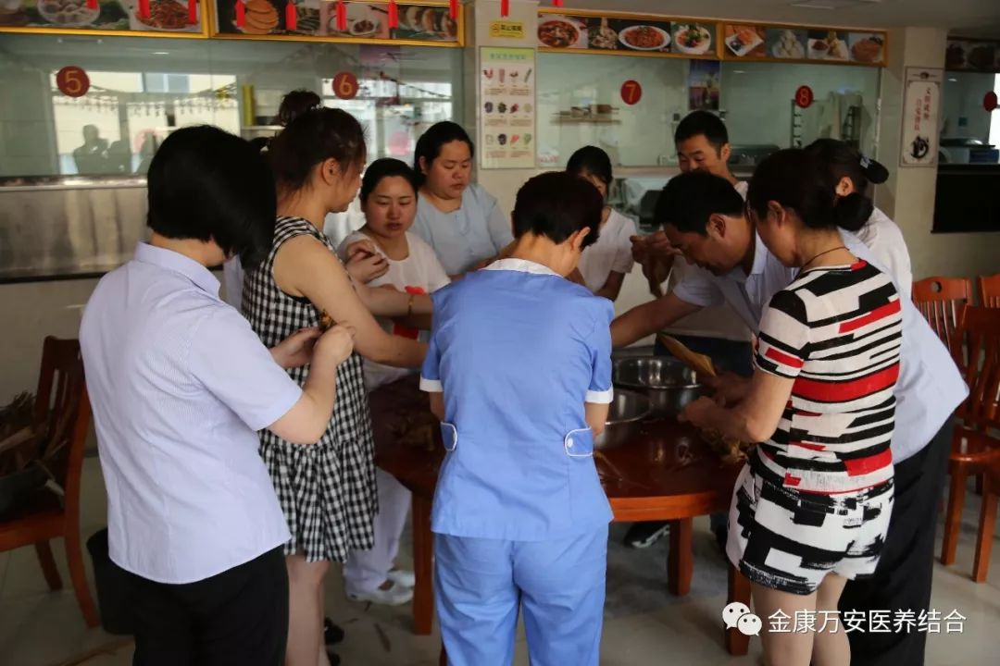 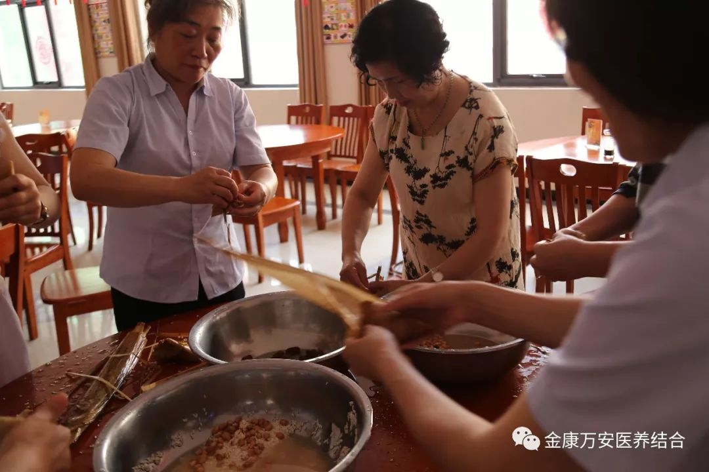 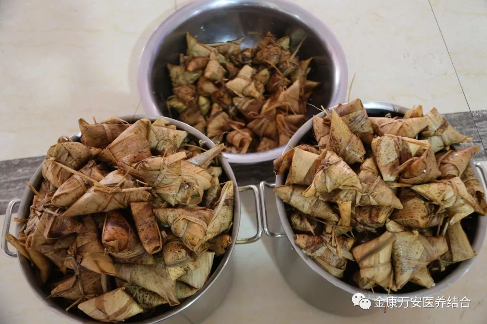
人多力量大
下午2点半，金康万安两院膳食科的家人们就把提前泡好的糯米、红枣、竹叶、花生等材料整齐地摆放在桌子上。大家围在一起，纷纷露出看家本领，雪白晶莹的糯米、饱满红润的大枣、翠绿飘香的粽叶在经验丰富的家人手中不一会儿就变成了一个个棱角分明的粽子，赢得了大家的赞叹。
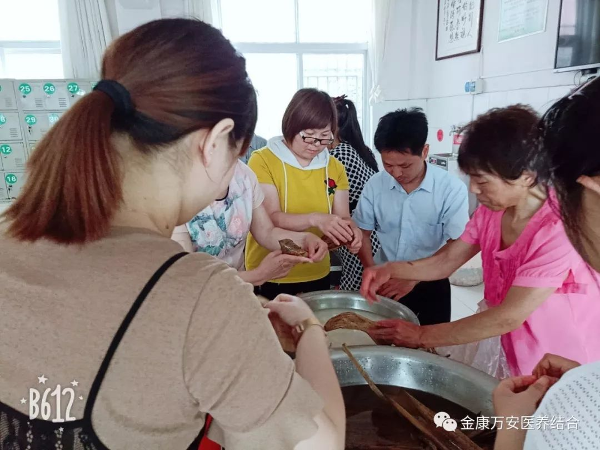 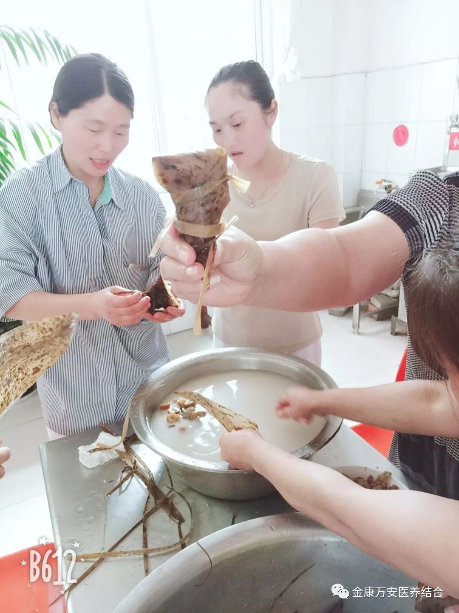 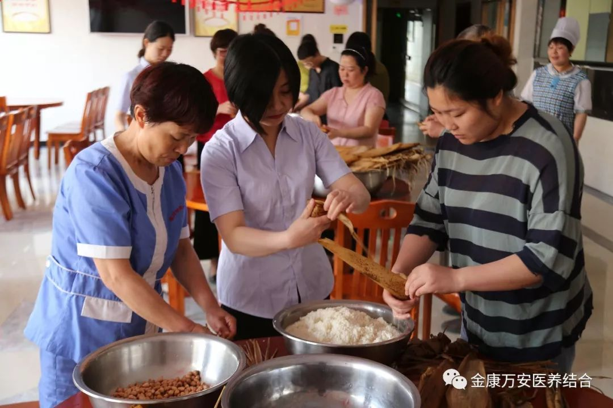在包粽子过程中，大家互相交流，互相学习，还不熟练的人纷纷向老手们请教，认真学习装馅、包叶、捆扎等技巧，虽然最终包出来的不太精致，但是看着自己亲手包的粽子内心还是十分欣喜，每一个粽子都饱含着大家对老人们的深深祝福。活动现场其乐融融，笑声和棕香弥漫着全院。
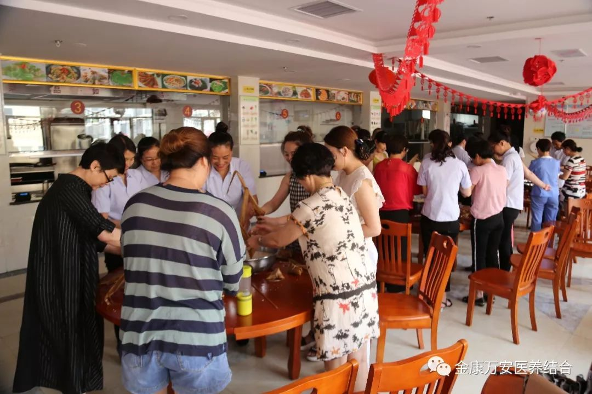会包者手把手教新手如何包粽子
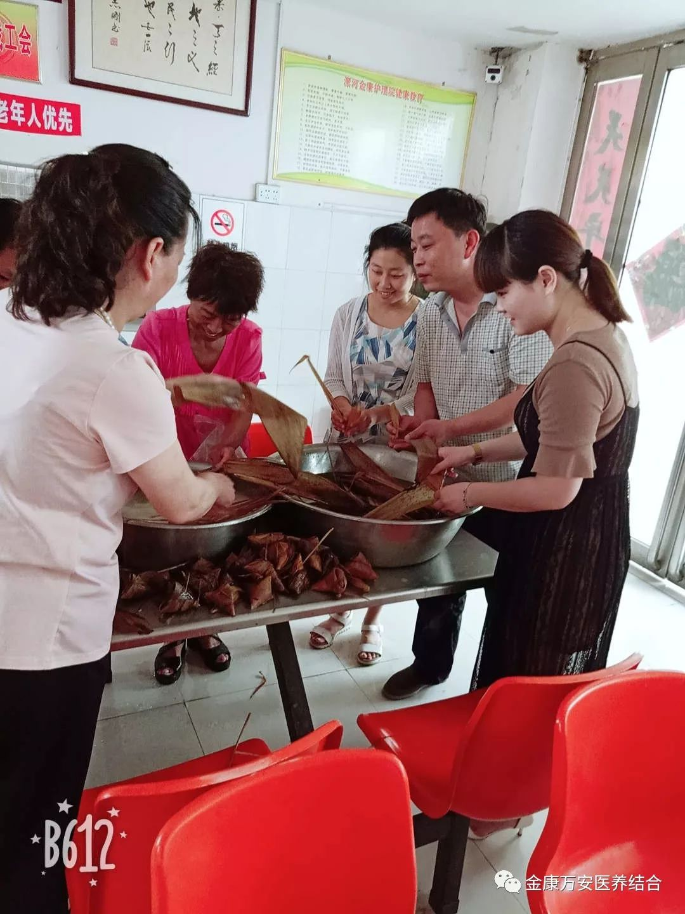
给大家点个赞
在所有的端午的习俗中，最富于静态美和温馨气息的莫过于制作和佩戴香包了，端午节传统香囊中的香料可以预防感冒、手足口病等，且对防蚊驱虫有一定作用。
早上7点，院长王卫峰、业务院长刘洋、银令令就早早的来到了万安老年公寓，在端午节之际给老人送上员工亲手包的粽子和香包，让入住老人在这里感受到节日的祝福和家的温暖。
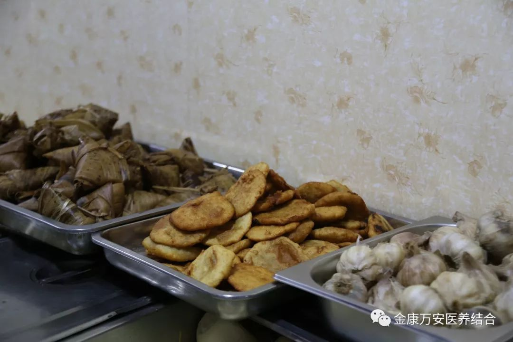给老人准备的粽子、糖糕、煮好的大蒜
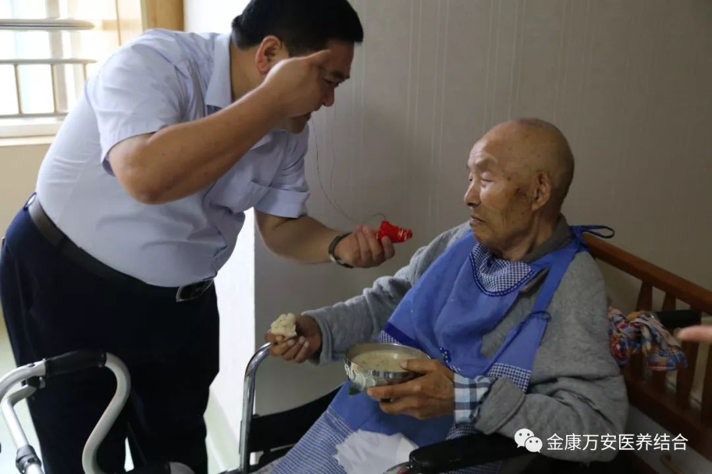
王院长给老人佩戴香包
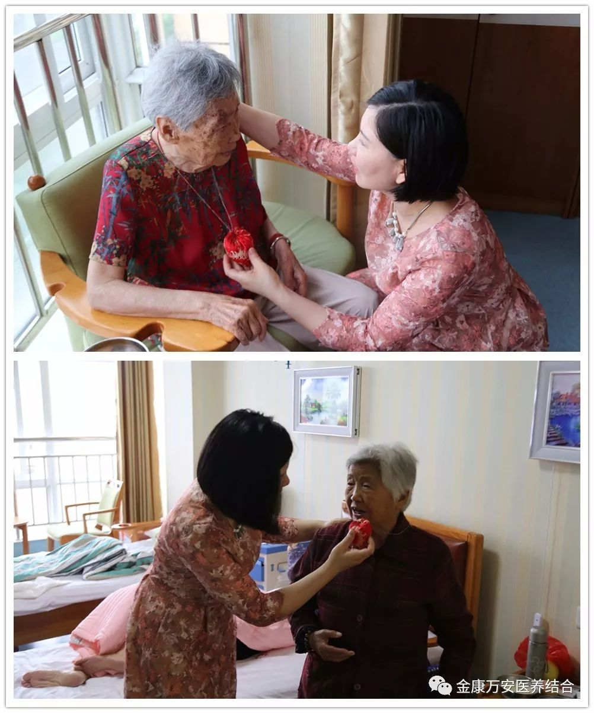
银院长亲自给老人佩戴香包
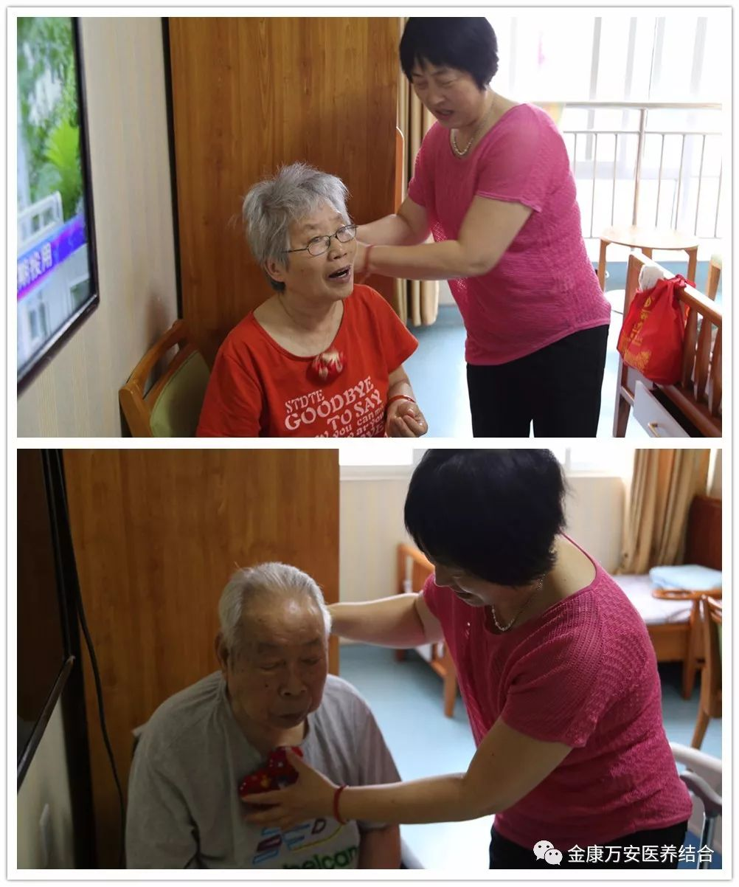
刘院长给老人佩戴香包
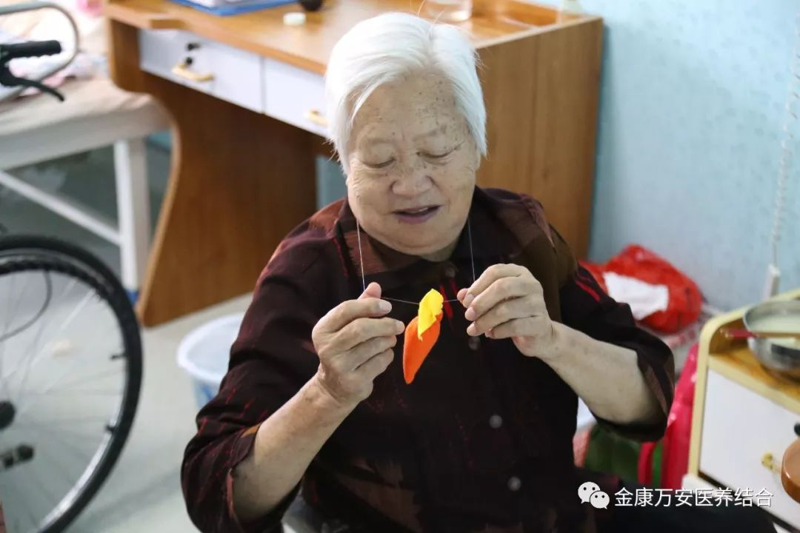
包含着大家满满爱的香包，老人非常高兴